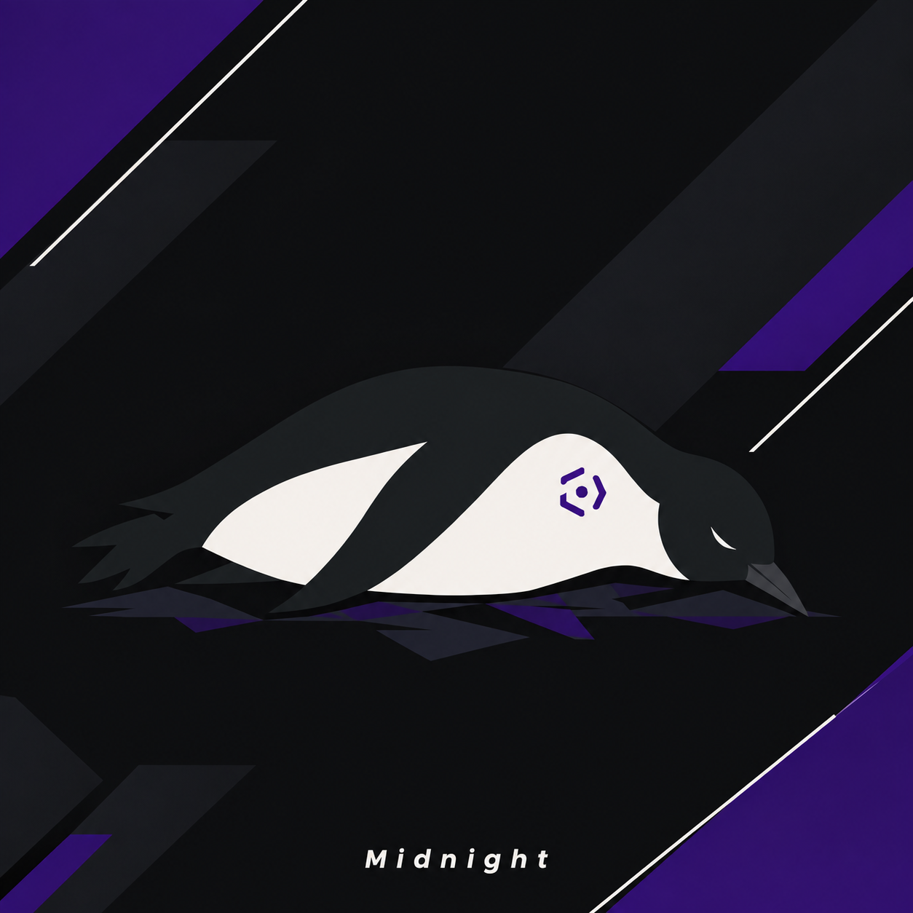

المسارات التعليمية
خطط مرتبة من الأساسيات إلى التخصصات.
ACADEMY
افهم التقنية بدل ما تحفظها. ابدأ من الشبكات والبرمجة، ثم انتقل إلى الأمن السيبراني عبر دروس عملية ومختبرات محاكاة.

خطط مرتبة من الأساسيات إلى التخصصات.
طبّق ما تعلمته داخل تحديات آمنة.
حلل أدلة افتراضية واربط الأحداث ببعضها.
اختر مجالًا وابدأ من مستواك. جميع المسارات متاحة للجميع.
تحديات تعليمية تعمل داخل المتصفح. لا يتم فحص أجهزة أو مواقع حقيقية.
اختبار قصير يساعدك على اختيار بداية مناسبة. لا يمنعك من دخول أي مسار.
قضايا خيالية بأدلة قابلة للمراجعة. اقرأ السجلات، كوّن فرضية، ثم أجب.
مواد مختارة لتبدأ صح، مع أمثلة ومفاهيم أساسية.